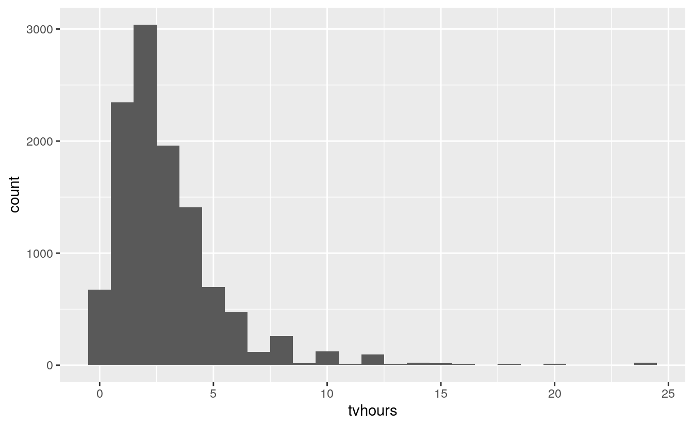
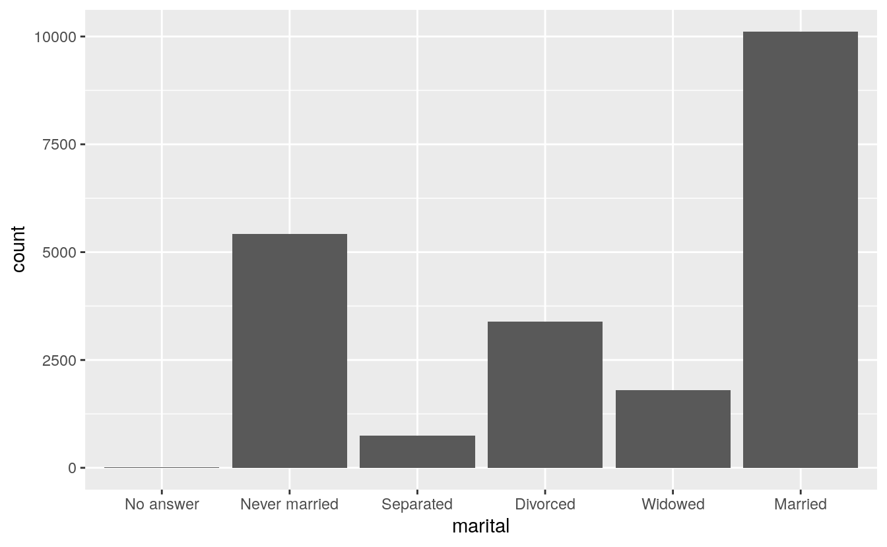
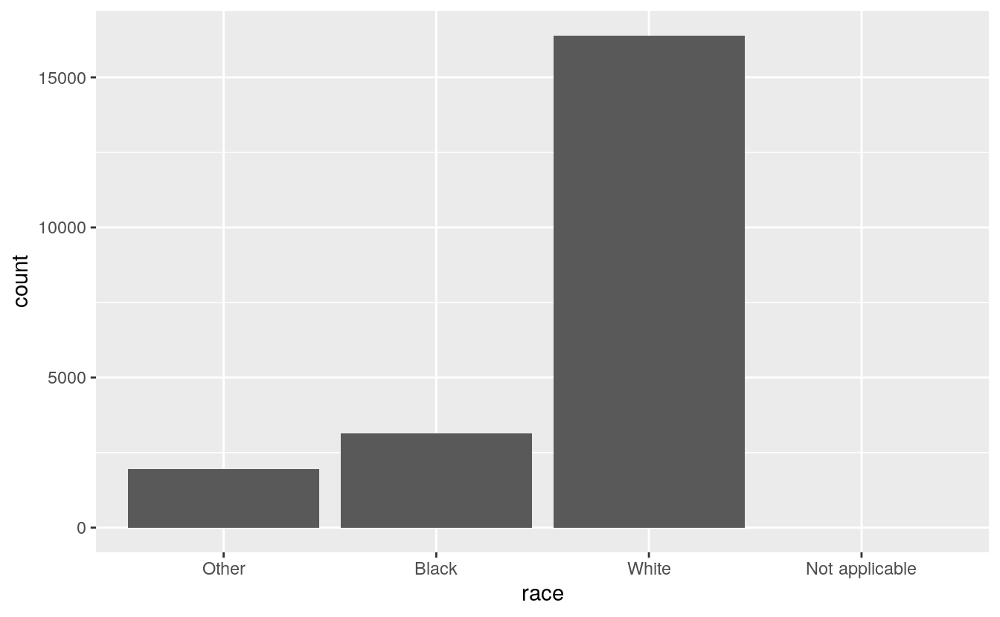
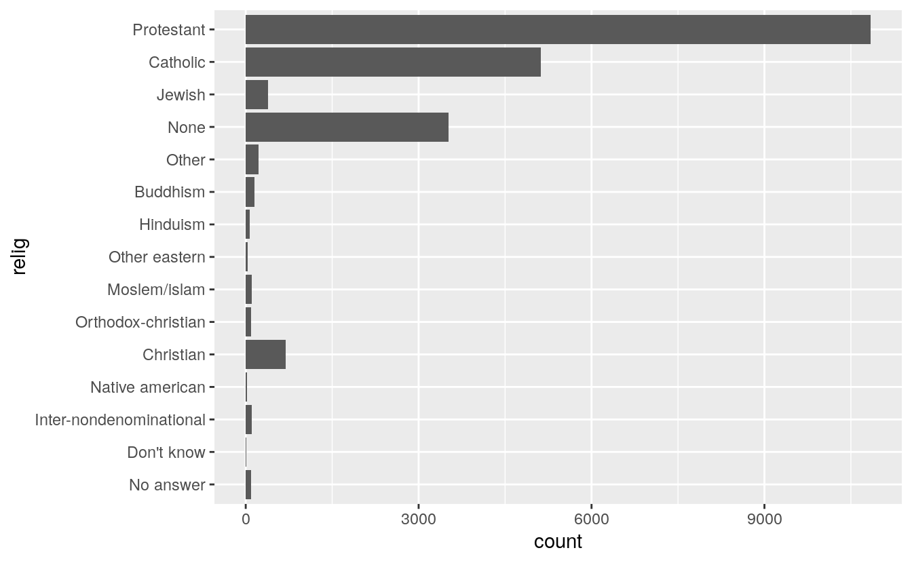
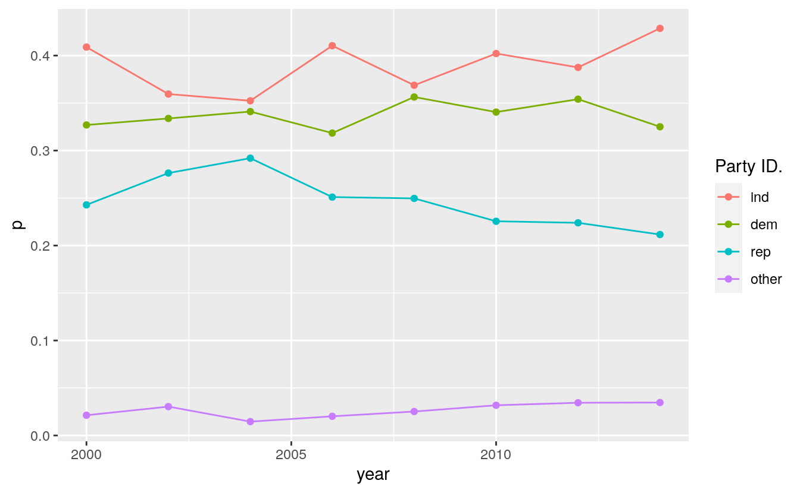
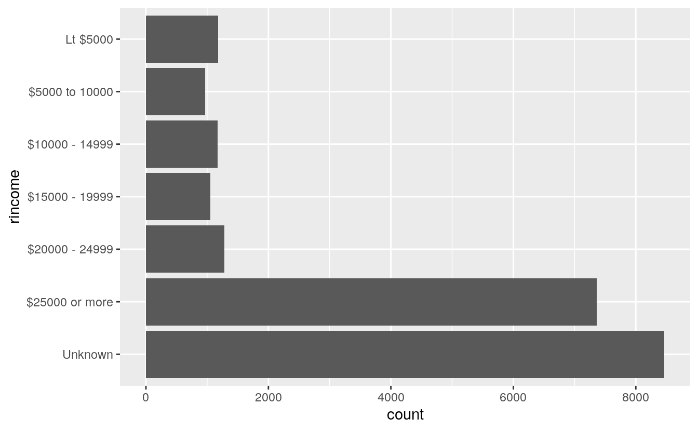

15 Factors
This book is superseded.
These are solutions to the 1st edition of R for Data Science . A 2nd edition has since been published, with its own solutions to the exercises .
This site is no longer maintained. It is kept online for reference.
15.1 Introduction
Functions and packages:
library("tidyverse")
#> Warning: package 'purrr' was built under R version 4.0.5The forcats package does not need to be explicitly loaded, since the recent versions of the tidyverse package now attach it.
15.2 Creating factors
15.4 Modifying factor order
Exercise 15.4.1
There are some suspiciously high numbers in tvhours.
Is the mean a good summary?
summary(gss_cat[["tvhours"]])
#> Min. 1st Qu. Median Mean 3rd Qu. Max. NA's
#> 0 1 2 3 4 24 10146gss_cat %>%
filter(!is.na(tvhours)) %>%
ggplot(aes(x = tvhours)) +
geom_histogram(binwidth = 1)
Whether the mean is the best summary depends on what you are using it for :-), i.e. your objective. But probably the median would be what most people prefer. And the hours of TV doesn’t look that surprising to me.
Exercise 15.4.2
For each factor in gss_cat identify whether the order of the levels is arbitrary or principled.
The following piece of code uses functions introduced in Ch 21, to print out the names of only the factors.
keep(gss_cat, is.factor) %>% names()
#> [1] "marital" "race" "rincome" "partyid" "relig" "denom"There are six categorical variables: marital, race, rincome, partyid, relig, and denom.
The ordering of marital is “somewhat principled.” There is some sort of logic in that the levels are grouped “never married,” married at some point (separated, divorced, widowed), and “married”; though it would seem that “Never Married,” “Divorced,” “Widowed,” “Separated,” “Married” might be more natural. I find that the question of ordering can be determined by the level of aggregation in a categorical variable, and there can be more “partially ordered” factors than one would expect.
levels(gss_cat[["marital"]])
#> [1] "No answer" "Never married" "Separated" "Divorced"
#> [5] "Widowed" "Married"gss_cat %>%
ggplot(aes(x = marital)) +
geom_bar()
The ordering of race is principled in that the categories are ordered by count of observations in the data.
levels(gss_cat$race)
#> [1] "Other" "Black" "White" "Not applicable"gss_cat %>%
ggplot(aes(race)) +
geom_bar() +
scale_x_discrete(drop = FALSE)
The levels of rincome are ordered in decreasing order of the income; however
the placement of “No answer,” “Don’t know,” and “Refused” before, and “Not
applicable” after the income levels is arbitrary. It would be better to place
all the missing income level categories either before or after all the known
values.
levels(gss_cat$rincome)
#> [1] "No answer" "Don't know" "Refused" "$25000 or more"
#> [5] "$20000 - 24999" "$15000 - 19999" "$10000 - 14999" "$8000 to 9999"
#> [9] "$7000 to 7999" "$6000 to 6999" "$5000 to 5999" "$4000 to 4999"
#> [13] "$3000 to 3999" "$1000 to 2999" "Lt $1000" "Not applicable"The levels of relig is arbitrary: there is no natural ordering, and they don’t appear to be ordered by stats within the dataset.
levels(gss_cat$relig)
#> [1] "No answer" "Don't know"
#> [3] "Inter-nondenominational" "Native american"
#> [5] "Christian" "Orthodox-christian"
#> [7] "Moslem/islam" "Other eastern"
#> [9] "Hinduism" "Buddhism"
#> [11] "Other" "None"
#> [13] "Jewish" "Catholic"
#> [15] "Protestant" "Not applicable"gss_cat %>%
ggplot(aes(relig)) +
geom_bar() +
coord_flip()
The same goes for denom.
levels(gss_cat$denom)
#> [1] "No answer" "Don't know" "No denomination"
#> [4] "Other" "Episcopal" "Presbyterian-dk wh"
#> [7] "Presbyterian, merged" "Other presbyterian" "United pres ch in us"
#> [10] "Presbyterian c in us" "Lutheran-dk which" "Evangelical luth"
#> [13] "Other lutheran" "Wi evan luth synod" "Lutheran-mo synod"
#> [16] "Luth ch in america" "Am lutheran" "Methodist-dk which"
#> [19] "Other methodist" "United methodist" "Afr meth ep zion"
#> [22] "Afr meth episcopal" "Baptist-dk which" "Other baptists"
#> [25] "Southern baptist" "Nat bapt conv usa" "Nat bapt conv of am"
#> [28] "Am bapt ch in usa" "Am baptist asso" "Not applicable"Ignoring “No answer,” “Don’t know,” and “Other party,” the levels of partyid are ordered from “Strong Republican”" to “Strong Democrat.”
levels(gss_cat$partyid)
#> [1] "No answer" "Don't know" "Other party"
#> [4] "Strong republican" "Not str republican" "Ind,near rep"
#> [7] "Independent" "Ind,near dem" "Not str democrat"
#> [10] "Strong democrat"Exercise 15.4.3
Why did moving “Not applicable” to the front of the levels move it to the bottom of the plot?
Because that gives the level “Not applicable” an integer value of 1.
15.5 Modifying factor levels
Exercise 15.5.1
How have the proportions of people identifying as Democrat, Republican, and Independent changed over time?
To answer that, we need to combine the multiple levels into Democrat, Republican, and Independent
levels(gss_cat$partyid)
#> [1] "No answer" "Don't know" "Other party"
#> [4] "Strong republican" "Not str republican" "Ind,near rep"
#> [7] "Independent" "Ind,near dem" "Not str democrat"
#> [10] "Strong democrat"gss_cat %>%
mutate(
partyid =
fct_collapse(partyid,
other = c("No answer", "Don't know", "Other party"),
rep = c("Strong republican", "Not str republican"),
ind = c("Ind,near rep", "Independent", "Ind,near dem"),
dem = c("Not str democrat", "Strong democrat")
)
) %>%
count(year, partyid) %>%
group_by(year) %>%
mutate(p = n / sum(n)) %>%
ggplot(aes(
x = year, y = p,
colour = fct_reorder2(partyid, year, p)
)) +
geom_point() +
geom_line() +
labs(colour = "Party ID.")
Exercise 15.5.2
How could you collapse rincome into a small set of categories?
Group all the non-responses into one category, and then group other categories into a smaller number. Since there is a clear ordering, we would not use fct_lump().`
levels(gss_cat$rincome)
#> [1] "No answer" "Don't know" "Refused" "$25000 or more"
#> [5] "$20000 - 24999" "$15000 - 19999" "$10000 - 14999" "$8000 to 9999"
#> [9] "$7000 to 7999" "$6000 to 6999" "$5000 to 5999" "$4000 to 4999"
#> [13] "$3000 to 3999" "$1000 to 2999" "Lt $1000" "Not applicable"library("stringr")
gss_cat %>%
mutate(
rincome =
fct_collapse(
rincome,
`Unknown` = c("No answer", "Don't know", "Refused", "Not applicable"),
`Lt $5000` = c("Lt $1000", str_c(
"$", c("1000", "3000", "4000"),
" to ", c("2999", "3999", "4999")
)),
`$5000 to 10000` = str_c(
"$", c("5000", "6000", "7000", "8000"),
" to ", c("5999", "6999", "7999", "9999")
)
)
) %>%
ggplot(aes(x = rincome)) +
geom_bar() +
coord_flip()